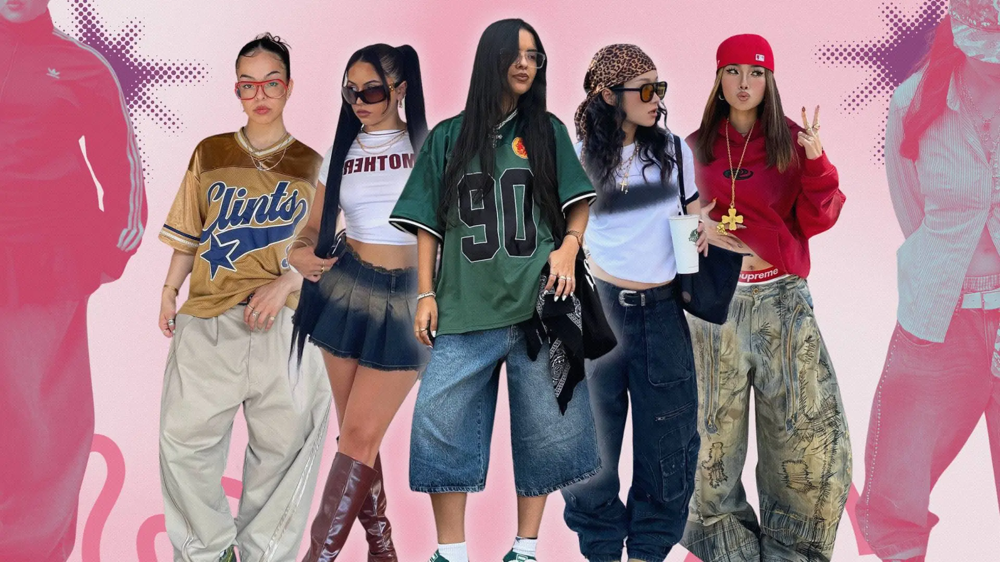

Silhuetas e Proporções: o domínio do Boxy Fit
A silhueta é um dos primeiros elementos percebidos em um look, antes mesmo das cores, estampas ou acessórios. No streetwear, ela é responsável por definir grande parte da presença visual da composição.
O Boxy Fit se destaca como uma das principais bases da estética urbana atual. Diferentemente do que muitas pessoas pensam, ele não significa simplesmente usar roupas maiores. O volume e o caimento são planejados.
O Boxy Fit trabalha com linhas retas, ombros mais largos, comprimento equilibrado e uma estrutura mais definida, criando uma aparência quase “quadrada” no corpo. Essa construção transmite uma sensação de força, estabilidade e atitude.
Ele se diferencia do oversized, que está relacionado principalmente ao tamanho ampliado da peça. Nesse caso, as roupas são propositalmente maiores que o corpo, apresentando mais tecido e um caimento mais solto. Porém, o ponto principal não está apenas no tamanho, mas na proporção.
No streetwear, o volume funciona como uma ferramenta criativa. Ele pode alongar, encurtar, ampliar ou equilibrar visualmente o corpo. É nesse momento que o styling ganha importância.
Como trabalhar o Boxy Fit na prática
- Largo + largo: cria uma estética contemporânea e mais fashionista, como uma camiseta oversized combinada com uma calça cargo ampla e um tênis robusto.
- Largo + ajustado: proporciona contraste e equilíbrio, como um hoodie amplo combinado com uma calça reta ou levemente afunilada.
- Camadas com volume: reforçam a presença e criam profundidade, como uma camiseta oversized combinada com uma jaqueta boxy e uma calça baggy.
Quando o Boxy Fit é bem construído, nada parece estar simplesmente “sobrando”, mesmo com o uso de peças amplas. Existe uma intenção por trás do corte, do caimento e da maneira como cada peça se relaciona com as outras. Já o oversized, dependendo da forma como é utilizado, pode transmitir uma estética mais descontraída e exagerada.
Minimalismo gráfico
O minimalismo gráfico surge como uma alternativa ao excesso de informação visual que marcou o streetwear nos anos 2000, principalmente por meio de logos grandes e estampas chamativas.
Com a evolução do estilo, surgiu uma nova proposta: menos elementos e mais intenção. Nesse conceito, a atenção deixa de estar concentrada apenas nas estampas e passa para a construção do look, valorizando o caimento, as proporções, as texturas e os acabamentos.
Isso não significa que o minimalismo no streetwear seja sinônimo de um visual básico e sem personalidade. Pelo contrário, essa abordagem exige ainda mais atenção aos detalhes.
Como aplicar na prática
- Aposte em looks monocromáticos, como produções totalmente pretas, beges ou cinzas, para criar uma unidade visual.
- Combine peças lisas com cortes bem definidos, como uma camiseta estruturada com uma calça wide leg.
- Utilize acessórios como pontos de destaque, como correntes, bonés ou tênis.
- Explore o contraste entre diferentes materiais, como algodão e nylon, para acrescentar riqueza visual à composição.
O resultado é um visual limpo, mas que mantém presença. Uma produção que pode parecer simples à primeira vista, mas que foi cuidadosamente pensada.
Techwear
O techwear possui forte influência utilitária e está relacionado à necessidade de funcionalidade. Sua estética recebe referências do vestuário militar, das roupas táticas e das peças esportivas de alta performance.
A ideia central é simples: cada elemento da roupa possui uma função. Bolsos, zíperes, tecidos resistentes à água, ajustes e recortes não estão presentes apenas por questões visuais; eles também facilitam o uso da peça no dia a dia.
Com o passar do tempo, essa funcionalidade passou a fazer parte da linguagem estética da moda urbana. Peças como calças cargo, coletes utilitários e jaquetas corta-vento, por exemplo, seguem essa lógica de uso prático e atualmente fazem parte do streetwear contemporâneo.
Como aplicar no dia a dia
- Combine uma calça cargo com uma peça superior mais limpa para equilibrar a quantidade de informação no visual.
- Utilize coletes utilitários como terceira camada para acrescentar profundidade à composição.
- Aposte em diferentes tecidos, como nylon, tactel e poliéster, para criar contraste visual.
O techwear funciona melhor quando cada peça possui uma função dentro da composição. Dessa forma, o visual mantém naturalidade e autenticidade, sem parecer excessivamente elaborado.
Color Block
O color block consiste na combinação de cores contrastantes e possui referências em movimentos artísticos, como o modernismo. Ao ser incorporado à moda, seu objetivo passou a ser criar um impacto visual imediato.
No streetwear, essa técnica aparece como uma maneira de quebrar a neutralidade e acrescentar energia ao look. Porém, não se trata de misturar cores aleatoriamente, mas de encontrar um equilíbrio entre elas. As combinações funcionam justamente por criarem um contraste controlado.
Como usar sem exagerar
- Combine duas cores principais fortes, como azul e laranja, mantendo o restante da composição em tons neutros.
- Utilize peças de destaque, como uma jaqueta ou um tênis, para concentrar o impacto visual.
- Equilibre a produção com uma base neutra, como preto, branco ou bege, evitando excesso de informação.
- Repita uma das cores em pequenos detalhes, como acessórios ou logos, criando uma conexão visual entre as peças.
O color block é uma ferramenta eficiente para transformar uma composição simples em um visual marcante e memorável.
Layering
O layering, também conhecido como sobreposição de peças, surgiu da necessidade de adaptação em culturas urbanas nas quais o clima e o ambiente exigiam maior flexibilidade.
No streetwear, essa prática ultrapassou sua função original e passou a fazer parte da construção estética dos looks. A sobreposição cria profundidade, acrescenta textura e permite explorar diferentes proporções. É uma das técnicas mais importantes para quem deseja elevar a composição, transformando peças básicas em combinações mais complexas e interessantes.
Como aplicar na prática
- Escolha as peças que serão sobrepostas e defina qual delas terá maior destaque, como uma camiseta oversized.
- Adicione uma camada por baixo que contribua para o caimento e crie contraste, como uma camisa de manga longa.
- Finalize com uma saia curta, bermuda ou calça baggy que ajude a reforçar a estética streetwear.
O segredo do layering está em encontrar um equilíbrio entre espontaneidade e técnica.
Peças Essenciais: o DNA do guarda-roupa Street
Para ter um guarda-roupa alinhado ao estilo streetwear, algumas peças são fundamentais. Elas servem como base para diferentes combinações e ajudam a criar looks versáteis, que transitam entre o dia a dia e o rolê sem perder a identidade.
Mais do que peças isoladas, esses itens ajudam a construir o DNA da moda urbana.
- Camiseta oversized: é um dos principais pontos de partida do streetwear. Com caimento amplo e estrutura mais solta, ela define rapidamente a silhueta urbana. Pode ser utilizada como peça principal ou como base para sobreposições.
- Calça cargo ou baggy: acrescenta volume e funcionalidade ao visual. Os bolsos utilitários e a modelagem ampla combinam estética e praticidade, além de criar movimento e ajudar a equilibrar peças superiores mais pesadas ou estruturadas.
- Moletom (hoodie): é uma das peças mais marcantes do streetwear. Além de proporcionar conforto, também acrescenta presença ao look. Pode assumir o protagonismo da composição ou ser utilizado como camada em produções mais elaboradas, principalmente com técnicas de layering.
- Jaqueta oversized: é uma ótima opção para elevar a composição. Ela adiciona profundidade, textura e informação visual, podendo aparecer em versões puffer, jeans, corta-vento ou utilitária. O principal é o volume e o impacto que a peça proporciona ao conjunto.
- Sneakers: no streetwear, o tênis ocupa um papel de destaque. Muitas vezes, ele influencia toda a construção do look, orientando escolhas de cores, proporções e estilo.
- Acessórios: acrescentam personalidade e complexidade ao visual por meio de bonés, shoulder bags, relógios, correntes e óculos. Eles ajudam a reforçar a estética urbana e permitem personalizar a composição de maneira mais discreta ou marcante.